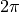
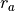
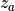
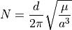
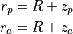
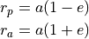
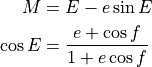

WSF_NORAD_SPACE_MOVER¶
Script Type: WsfSpaceMover
- mover WSF_NORAD_SPACE_MOVER¶
mover <name> WSF_NORAD_SPACE_MOVER ... base mover commands... ... Orbital Element Commands... ... Orbital Propagator Commands... orbit_color ... conjunction_setup ... end_conjunction_setup attitude_controller <type-name> ... ... end_attitude_controller maneuvering <type-name> ... ... end_maneuvering mission_sequence ... end_mission_sequence orbital_state ... end_orbital_state end_mover
Overview¶
WSF_NORAD_SPACE_MOVER implements a mover for a platform in orbit about the Earth. It is useful for modeling satellites for which two-line element (TLE) sets are available, including most operational Earth-orbiting satellites, non-operational satellites, and actively-tracked orbiting debris.
The mover implements propagation algorithms as defined in the document SpaceTrack Report No. 3 (https://www.celestrak.com/NORAD/documentation/spacetrk.pdf) . This report provides algorithms that define several models; the mover selects the appropriate model (NORAD SGP, SGP4, SGP8, SDP4, or SDP8) for propagation depending on the data provided in the two-line element. Oblate earth, drag, and third-body Sun and Moon perturbation effects are taken into account by these models.
The WSF_NORAD_SPACE_MOVER is capable of executing a variety of maneuvers. Maneuvers can be specified through mission_sequence inputs, or they may be scripted with the WsfSpaceMover script object and the mover’s script interface. Configurable maneuvering models determine how delta-V is expended in mission sequences in which maneuvers are performed.
The mover’s orientation is specified and controlled with the configurable attitude controller model. A variety of standard orientation options are provided, and the orientation can also be changed dynamically through script.
Note
The start_date and start_time, or start_epoch commands should also be defined in the scenario as they are required to properly compute the ephemeris data.
Note
Though the WSF_NORAD_SPACE_MOVER does support most maneuver types, currently the Change Right Ascension of Ascending Node (RAAN) and Change Right Ascension of Ascending Node (RAAN) and Inclination are not supported.
Commands¶
Orbital State Commands¶
- orbital_state … end_orbital_state¶
Specify the orbital state in the form of an epoch or epoch_date_time, and one of the following:
Sufficient orbital element commands
An orbit … end_orbit command block containing a Two-Line Element (TLE) (when using a WSF_NORAD_SPACE_MOVER).
- position <real> <real> <real> <length-units>¶
Sets the initial location of the space mover. This command must be used in conjunction with the velocity command.
- velocity <real> <real> <real> <speed-units>¶
Sets the initial velocity of the space mover. This command must be used in conjunction with the position command.
Note
The Position and velocity inputs must be provided sequentially, with the velocity input immediately following position.
//Example: Orbital elements declaration platform test-oe WSF_PLATFORM add mover WSF_SPACE_MOVER orbital_state epoch 2021245.18563 semi_major_axis 10000 km eccentricity 0.2 mean_anomaly 255 deg inclination 30 deg raan 120 deg argument_of_periapsis 80 deg end_orbital_state end_mover end_platform //Example: Position/velocity declaration platform test-rv WSF_PLATFORM add mover WSF_SPACE_MOVER orbital_state epoch 2021245.18563 position 800 0 0 km velocity 100 3000 -50 m/s end_orbital_state end_mover end_platform //Example: TLE declaration //Note: TLE declaration is only allowed within a WSF_NORAD_SPACE_MOVER platform test-tle WSF_PLATFORM add mover WSF_NORAD_SPACE_MOVER orbital_state orbit 0 HST 1 20580U 90037B 20216.30423610 .00000333 00000-0 92680-5 0 9996 2 20580 28.4681 168.2117 0002666 190.3324 294.3699 15.09238375401891 end_orbit end_orbital_state end_mover end_platform
- epoch [<epoch-value> | platform_creation_epoch]¶
Specify the epoch that corresponds with the reference epoch at which the orbital elements are valid.
If platform_creation_epoch is specified, initial epoch will be set to the platform’s creation time.
//Example: platform_creation_epoch usage //In this case, initial epoch will be set to 1 hour after simulation start platform test-oe WSF_PLATFORM creation_time 1 hour add mover WSF_SPACE_MOVER orbital_state epoch platform_creation_epoch semi_major_axis 10000 km eccentricity 0.2 mean_anomaly 255 deg inclination 30 deg raan 120 deg argument_of_periapsis 80 deg end_orbital_state end_mover end_platform
- epoch_date_time <month> <day-of-month> <year> <hh:mm:ss>¶
Specify the date and time that corresponds with the reference epoch at which the orbital elements are valid.
Note
The month is expressed in a three character format as follows:
jan | feb | mar | apr | may | jun | jul | aug | sep | oct | nov | dec
The time of day is referenced to UT midnight and using a 24 hour clock.
Orbital Element Commands¶
- designator <string-value>¶
Specify the designator for the space mover.
Default “00001A”
Note
If a TLE is being used, the designator is provided by the TLE satellite international designator in line one.
- eccentricity <real-value>¶
Specify the eccentricity of the orbit. The specified value must be greater than or equal to zero (circular orbit).
Default: 0
Note
eccentricity must also be less than 1.0 (parabolic orbit) for the WSF_SPACE_MOVER and WSF_NORAD_SPACE_MOVER.
- semi_major_axis <length-value>¶
Specify the semi-major axis of the ellipse defining the orbit.
Default: None. This must be provided or derivable from other commands. See Derivation of Orbital Element Input Values.
Note
For an eccentricity of zero, the semi-major axis becomes the radius of a circle.
Note
This input is equivalent with revolutions_per_day, as the two are related by Kepler’s 3rd law. If both are specified, the last one specified is used.
- revolutions_per_day <real-value>¶
Specify the number revolutions per day the satellite orbits the Earth.
Default: None. This must be provided or derivable from other commands. See Derivation of Orbital Element Input Values.
Note
This input is equivalent with semi_major_axis, as the two are related by Kepler’s 3rd law. If both are specified, the last one specified is used.
- periapsis_radius <length-value>¶
Specify the periapsis radius of the ellipse defining the orbit. This is the smallest distance between the satellite and the center of the central body.
Default: None. This must be provided or derivable from other commands. See Derivation of Orbital Element Input Values.
Note
For an eccentricity of zero, the periapsis radius is equal to both the apoapsis radius and the semi-major axis.
Note
This input is equivalent with periapsis_altitude, as the two are related by the mean radius of the central_body. If both are specified, the last one specified is used.
- apoapsis_radius <length-value>¶
Specify the apoapsis radius of the ellipse defining the orbit. This is the largest distance between the satellite and the center of the central body.
Default: None. This must be provided or derivable from other commands. See Derivation of Orbital Element Input Values.
Note
For an eccentricity of zero, the apoapsis radius is equal to both the periapsis radius and the semi-major axis.
Note
This input is equivalent with apoapsis_altitude, as the two are related by the mean radius of the central_body. If both are specified, the last one specified is used.
- periapsis_altitude <length-value>¶
Specify the periapsis altitude of the ellipse defining the orbit. This is the smallest distance between the satellite and the surface of the central body.
Default: None. This must be provided or derivable from other commands. See Derivation of Orbital Element Input Values.
Note
For an eccentricity of zero, the periapsis altitude is equal to the apoapsis altitude.
Note
This input is equivalent with periapsis_radius, as the two are related by the mean radius of the central_body. If both are specified, the last one specified is used.
- apoapsis_altitude <length-value>¶
Specify the apoapsis altitude of the ellipse defining the orbit. This is the largest distance between the satellite and the surface of the central body.
Default: None. This must be provided or derivable from other commands. See Derivation of Orbital Element Input Values.
Note
For an eccentricity of zero, the apoapsis altitude is equal to the periapsis altitude.
Note
This input is equivalent with apoapsis_radius, as the two are related by the mean radius of the central_body. If both are specified, the last one specified is used.
- raan | right_ascension_of_ascending_node <angle-value>¶
Specify the right ascension of the ascending node (“raan”). This is the angle, measured counterclockwise along the celestial equator from the vernal equinox (the angle of right ascension) that the satellite crosses the equator from south to north (the ascending node).
Default: 0 deg
Note
raan values must be greater than or equal to zero and less than 360 degrees ( radians).
Note
raan is referenced to the True of Date coordinate system.
- inclination <angle-value>¶
Specify the separation angle of the tangent to the orbital plane with the Earth’s axis of rotation.
Default: 0 deg
Note
inclination values must be greater than or equal to zero (equatorial orbit) and less than or equal to 180 degrees (
 radians; retrograde equatorial orbit).
radians; retrograde equatorial orbit).Note
inclination is referenced to the True of Date coordinate system.
- mean_anomaly <angle-value>¶
Specify the angular location of the satellite in its orbit at the epoch time. This angle is measured from the periapsis and represents the angle the satellite would traverse at a constant angular rate.
Default: 0 deg
Note
mean_anomaly values must be greater than or equal to zero and less than 360 degrees ( radians).
Note
This input is equivalent with true_anomaly. See Derivation of Orbital Element Input Values.
- true_anomaly <angle-value>¶
Specify the angular location of the satellite in its orbit at the epoch time. This angle is measured from the periapsis and represents the true angular location of the satellite.
Default: 0 deg
Note
true_anomaly values must be greater than or equal to zero and less than 360 degrees ( radians).
Note
This input is equivalent with mean_anomaly. See Derivation of Orbital Element Input Values.
- argument_of_periapsis <angle-value>¶
Specify the angle of the perigee (periapsis) with respect to the Earth’s surface. This angle is measured from the ascending node.
Default: 0 deg
Note
argument_of_periapsis values must be greater than or equal to zero and less than 360 degrees ( radians).
- descriptor <string-value>¶
Specify an arbitrary descriptor (tag) for the space vehicle.
Note
If a TLE is being used, the descriptor is provided in line 0.
Derivation of Orbital Element Input Values¶
For some orbital elements, there are multiple ways to specify a particular characteristic of the orbit.
Symbol |
Command |
|---|---|
|
|
|
|
 |
|
|
|
 |
|
|
|
|


Orbit Size/Shape¶
The commands semi_major_axis and revolutions_per_day are equivalent inputs, as they are related by Kepler’s Third Law:

where:
is the number of seconds in a day (86400)
 is the gravitational constant of the central_body
is the gravitational constant of the central_body

Note: Not to scale.¶
The commands periapsis_radius and periapsis_altitude are equivalent inputs because they are related by the central body radius. The same is true of apoapsis_radius and apoapsis_altitude. See the diagram above and the equations below:

where  is the mean radius of the central_body.
is the mean radius of the central_body.
The periapsis_radius, apoapsis_radius, eccentricity, and semi_major_axis are related by the following two equations:

There are two equations with four unknowns; If two are specified, the other two can be determined. If only one of the parameters is specified, (eccentricity) is assumed to be zero, and all four parameters can still be determined.
Mean/True Anomaly¶
The commands mean_anomaly and true_anomaly are equivalent inputs, related by the following equations:

where:
is the eccentric anomaly, shown in the figure below.
 is the true anomaly, shown in the figure below.
is the true anomaly, shown in the figure below. is the mean anomaly, which is measured from the periapsis and represents the angle the satellite would traverse at a constant angular rate
is the mean anomaly, which is measured from the periapsis and represents the angle the satellite would traverse at a constant angular rate
This file was derived from: Eccentric and true anomaly.PNG:, CC BY-SA 4.0, https://commons.wikimedia.org/w/index.php?curid=48384905¶
- orbit_color <color-value>¶
Specify the color of the orbit.
Note
The alpha component of the color will not be used even if specified.
Orbit Command for Two-Line Elements (TLEs)¶
- orbit … end_orbit¶
Specify a Two Line Element (TLE) that defines mean orbital elements and other data used to propagate a satellite. Two Line Elements are usually acquired from an existing source such as the Spacetrak database (http://www.space-track.org) or Celestrak (http://www.celestrak.com/NORAD/elements). Unlike ordinary AFSIM inputs, the column formatting, field length, and character format must be exactly as specified below.:
orbit *<(optional) satellite descriptor>* *<first line of TLE>* *<second line of TLE>* end_orbit
The exact formatting and content of two-line elements are explained below:
TITLE INFORMATION: Line 1 Column Characters Description ----- |--- |---- 1 1 Line No. Identification 3 5 Catalog No. 8 1 Security Classification 10 8 International Identification 19 14 YRDOY.FODddddd 34 1 Sign of first time derivative 35 9 1st Time Derivative 45 1 Sign of 2nd Time Derivative 46 5 2nd Time Derivative 51 1 Sign of 2nd Time Derivative Exponent 52 1 Exponent of 2nd Time Derivative 54 1 Sign of Bstar/Drag Term 55 5 Bstar/Drag Term 60 1 Sign of Exponent of Bstar/Drag Term 61 1 Exponent of Bstar/Drag Term 63 1 Ephemeris Type 65 4 Element Number 69 1 Check Sum, Modulo 10 Line 2 Column Characters Description ----- |--- |---- 1 1 Line No. Identification 3 5 Catalog No. 9 8 Inclination 18 8 Right Ascension of Ascending Node 27 7 Eccentricity with assumed leading decimal 35 8 Argument of the Perigee 44 8 Mean Anomaly 53 11 Revolutions per Day (Mean Motion) 64 5 Revolution Number at Epoch 69 1 Check Sum Modulo 10
An Example TLE for the satellite Vanguard-1 is shown below:
orbit 1 00005U 58002B 09105.24506411 .00000084 00000-0 11810-3 0 4337 2 00005 034.2551 191.5961 1850437 000.0334 000.0199 10.83999999762276 end_orbit
Note
The WSF_SPACE_MOVER currently utilizes only the classical orbital elements contained in the TLE and interprets them as being instantaneous, not mean, elements.
Note
Use the Modify_tle_list perl script to convert lists of TLEs to AFSIM platform lists.
Orbital Propagator Commands¶
- central_body … end_central_body¶
central_body <central-body-type> polar_offset_angles end_central_body
Specify the central body and related ellipsoid model to be used by simulation platforms. Options for <central body type> are the following:
earth_wgs72 (Earth World Geodetic System 1972): The central body ellipsoid is defined according to the WGS-72 standard.
earth_wgs84 (Earth World Geodetic System 1984): The central body ellipsoid is defined according to the WGS-84 standard.
earth_egm96 (Earth Gravity Model 1996): The central body ellipsoid is defined according to the EGM-96 standard.
moon: The central body ellipsoid is defined according to published lunar parameters.
sun: The central body ellipsoid is defined according to published solar parameters.
jupiter: The central body ellipsoid is defined according to published Jovian parameters.
Default earth_wgs84
- polar_offset_angles <angle-value> <angle-value>¶
Specify the central_body’s polar offset angles (
 and
and  , respectively) of the Celestial Intermediate Pole (CIP) with respect to the WCS (ITRS) coordinate system. Providing these values (of the order of tenths of arc-seconds) enables very highly accurate conversions between ECI and WCS coordinates.
, respectively) of the Celestial Intermediate Pole (CIP) with respect to the WCS (ITRS) coordinate system. Providing these values (of the order of tenths of arc-seconds) enables very highly accurate conversions between ECI and WCS coordinates.
Default 0.0 rad 0.0 rad
Note
WCS->LLA conversions are affected by central body choice, as well as sidereal motion transforms calculated in inertial (ECI) coordinate conversions.
Deprecated Orbital Propagator Commands¶
- egm_96¶
- wgs_84¶
- heliocentric¶
Specify use of the wgs_84 gravitational parameter, the egm_96 gravitational parameter, or the heliocentric gravitational parameter for propagation. The heliocentric option is used to simulate bodies orbiting the sun.
Note
This setting is only effective for WSF_SPACE_MOVER.
Default wgs_84
Deprecated since version 2.9: The following debug output commands will be removed in a future release.
- debug_output_wsf <boolean-value>¶
Write additional information to standard output that can be processed by the CME tool “sedit’.
- debug_output_oe <boolean-value>¶
Write additional information about the orbital elements to standard output.
- debug_output_stk <boolean-value>¶
Write additional information to standard output that can be used for comparing the orbit with the Systems Tool Kit (STK) from Analytical Graphics, Inc.
- debug_output_xyz <boolean-value>¶
Write additional information to standard output that can be used for comparing the orbit with the Systems Tool Kit (STK) from Analytical Graphics, Inc.
Conjunction Setup Commands¶
conjunction_setup
<initial-position-specification>
with_target <target-platform>
at_time <time>
end_conjunction_setup
- conjunction_setup … end_conjunction_setup¶
Set this spacecraft’s initial conditions such that a conjunction with a given target spacecraft will occur at a specified time. During initialization an attempt will be made to find a solution with the given boundary conditions. If successful, this platform’s state will be set so that the specified conjunction occurs. If there is no solution (for example, the orbit would take the satellite through the Earth), the velocity of the spacecraft will be set to a default value (see below).
The initial position specification is one of the following: from_lla, from_eci or from_initial.
- from_lla <latitude-value> <longitude-value> <length-value>¶
Set the initial position of this spacecraft to the given latitude, longitude and altitude. If there is no solution to the conjunction, the velocity of the spacecraft will be set to that of a circular orbit with a heading of 90 degrees.
- from_eci <length-value> <length-value> <length-value>¶
Set the initial position of this spacecraft to the given position in the ECI frame. If there is no solution to the conjunction, the velocity of the spacecraft will be set to that of a circular orbit with a heading of 90 degrees.
- from_initial¶
Set the initial position of this spacecraft using other means to specify the initial orbit of the spacecraft. If there is no solution to the conjunction, the velocity of the spacecraft will be set to that provided by the other initialization methods.
- with_target <string-value>¶
Specify the name of the target platform of the conjunction. This spacecraft will move to the position of the target platform at the time specified in the at_time command. The specified target must be the name of a platform that moves in the space spatial domain.
- at_time <time-value>¶
Specify the time at which this spacecraft should suffer a conjunction with the specified target.
- tolerance <real-value>¶
Specify the tolerance for the conjunction solution. The default value of the tolerance is 1.0e-9.
Attitude Controller Models¶
attitude_controller <attitude-controller-model-name> ... end_attitude_controller
- attitude_controller … end_attitude_controller¶
Specify the attitude controller for the platform. All platforms having a WSF_SPACE_MOVER or WSF_NORAD_SPACE_MOVER will have an attitude controller of some kind. If no attitude controller block is specified, the mover will operate as if the instant attitude controller was selected.
Attitude controllers will attempt to change the orientation of the platform to match a given target orientation. At creation time, the attitude controller will have a target orientation specified by an orientation command in the attitude controller block. After creation, the orientation target of the attitude controller can be changed via WsfSpaceMover.SetOrientation.
Target orientations are either a one-time selection of the target orientation, or it will connect the attitude controller to one of the pre-set orientation types. In the latter case, the attitude controller will have a continually updated target orientation as the craft moves along its orbit.
Available Models:
Orbital Maneuvering Models¶
maneuvering <orbital-maneuver-model-name> maneuver_update_interval ... ... end_maneuvering
- maneuvering … end_maneuvering¶
Specifiy a model for executing orbital maneuvers in space.
Available Models:
Orbital Mission Sequence¶
mission_sequence <constraint> event Common Mission Event Commands mission event-specific commands ... end_event ... additional mission event definitions end_mission_sequence
- mission_sequence … end_mission_sequence¶
Specify a sequence of pre-determined orbital mission events. The first mission event specified is executed first, then the second, etc. An optional constraint can be specified to delay execution of the sequence; otherwise the mission event will begin executing at the creation time of the platform.
Event types that can be placed in a sequence include the following:
Orbital Maneuver Events:
Non-Orbital Maneuver Events:
// Example: Two mission events to raise a satellite
// from an initial injection point
// into a geosynchronous transfer orbit (GTO)
mission_sequence
// Constraint: delay two full orbits before executing
execute_at orbit 2 relative_time 0.0 s
// intermediate orbit
event change_semi_major_axis
semi_major_axis 9000 km
execute_at orbit 2 ascending_node // Constraint with orbit delay
end_event
// GTO
maneuver change_semi_major_axis // "maneuver ... end maneuver" block may be used with orbital maneuver types.
semi_major_axis 24821 km
execute_at ascending_node // Constraint without orbit delay
end_maneuver
end_mission_sequence
Note
Orbital mission events and mission event sequences are scriptable using the script methods WsfSpaceMover.ExecuteEvent (WsfSpaceMover.ExecuteManeuver) and WsfSpaceMover.ExecuteMissionSequence.
Script Interface¶
WSF_NORAD_SPACE_MOVER uses the Common Script Interface, as well as providing the implicitly defined reference, SPACE_MOVER, which allows calling WsfSpaceMover methods without type casting.